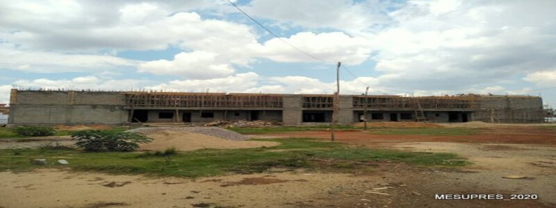
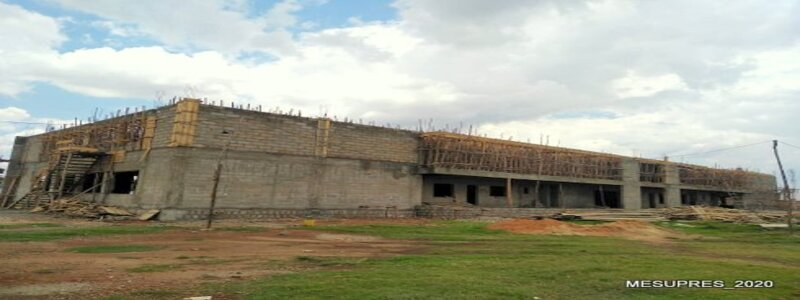
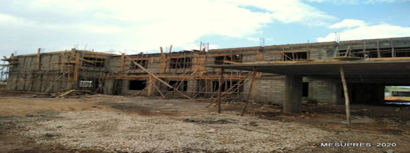
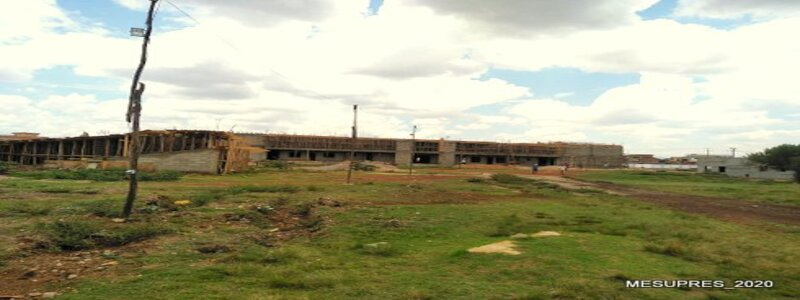
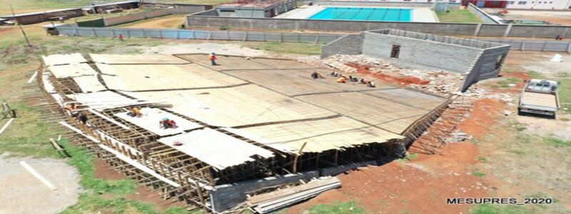

Projets et réalisation
Les universités de proximité sortent petit à petit de terre.
La mise en place d’université dans les régions étant une priorité de l’État Malagasy, des travaux de construction sont actuellement en cours dans la Vakinakaratra (Antsirabe), l’Itasy (Miarinarivo) et l’Atsinanana (Fenerive-Est). Ces quelques clichées témoignent de l’avancée des travaux et de la volonté Etatique de bénéficier les jeunes Malagasy d’un Enseignement Supérieur de Qualité.
    